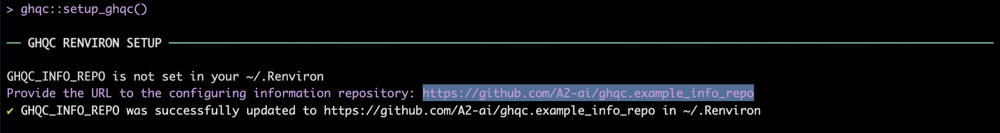
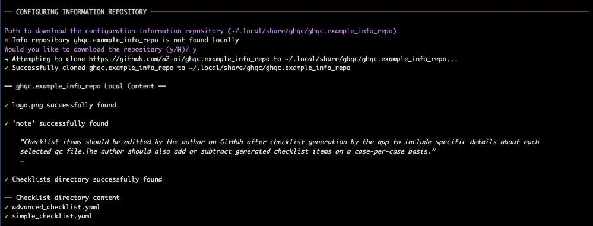
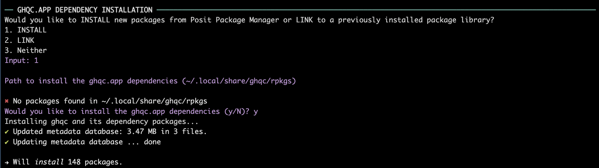
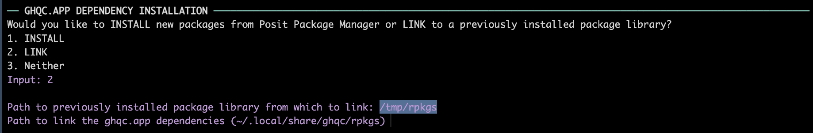

The goal of the ghqc ecosystem is to simplify, standardize, and improve traceability of the QC process through the use of shiny apps which create GitHub Issues and Milestones for your project. The ghqc package is a lightweight wrapper to be installed alongside project packages and has three primary functionalities:
Isolating Package Dependency: Installs, or symlinks, the high dependency burden of the ghqc shiny app ecosystem to an isolated directory to ensure no interference with any project work.
Launching Shiny Apps: Launches the ghqc shiny apps as background jobs to allow for continued use of the R Console.
Verifying Configuring Information: Aids in the installation and structure verification of the organization specific configuring information, such as checklists and logos.
Installation
You can install the development version of ghqc from GitHub with:
# install.packages("pak")
pak::pak("a2-ai/ghqc")Configuration Information Repository
The ghqc ecosystem has been developed with the intent organizations can customize elements of the QC process. Currently, the customizable elements are:
Checklists: yaml files contained within a directory named “checklist” (required)
Prepended Note: A note to prepend to all checklists named “note” (optional)
Logo: A logo to be included in the header of the resultant record’s header named as “logo.png” (required)
An example structure of the configuration information repository can be found at github.com/A2-ai/ghqc.example_info_repo.
ghqc Setup
ghqc has 3 main requirements that must be met before running any of the ghqc ecosystem apps:
An environmental variable,
GHQC_INFO_REPO, must be set to the configuration information repository url in “~/.Renviron”.The configuration information repository must be downloaded to a local location.
All of the dependency packages for the ghqc shiny apps, including
ghqc.appmust be located in the same directory.
Within this package, a function ghqc::setup_ghqc() aids in this setup:
ghqc::setup_ghqc()- Renviron Setup
Enter the url of the configuration information repository described above.

- Configuration Information Download and Verification
The configuration information will default to installing to “~/.local/share/ghqc/ENTER. Otherwise, type in the path in which to download the repository.
In addition to downloading the repository, the structure of the repository and the checklist yamls are verified.

In the case the configuration information repository has already been downloaded to the specified path and their are remote changes to the repository, the user will be warned and provided the option to download the new update.
- Shiny App Dependency Installation
Select whether to install the dependency packages or symlink to previously a previously installed package library.
-
INSTALL PACKAGES
NOTE: The install option is currently only available to linux systems supported by Posit Package Manager (PPM) and will install from PPM@2024-03-01.
The dependency packages are installed by default to “~/.local/share/ghqc/rpkgs”. To install to the default location, which is highly recommended, hit
ENTER. Otherwise, type in the path in which to install the dependency packages.

-
SYMLINK PACKAGES
NOTE: The link option requires all packages be installed in the same
link_pathAND they meet the requirements listed in the imports.Provide the path to the previously installed package library.
The dependency packages are symlinked by default to “~/.local/share/ghqc/rpkgs”. To symlink to the default location, which is highly recommended, hit
ENTER. Otherwise, type in the path in which to download the repository.

ghqc.app installation
NOTE: ghqc::ghqc_setup() does not install the ghqc.app package as the distribution method and/or required version may change based on organization needs.
You can install the development version of ghqc.app from GitHub with:
ghqc shiny app launching
ghqc will start a background job to launch an app from the ghqc ecosystem into the “Viewer” pane of your RStudio session. For technical information regarding these apps, refer to ghqc.app.
…